Rocky李彦明
Rocky，本名李彦明，是北京科技大学的高材生，拥有经济学和医学双学位。2015年底，他作为一名跨校的新面孔走进北航Toastmasters的会场，在第121次会议的即兴环节上场，用"从零开始，下一步可能是0.00001，也可能是-0.00001，0到1是一条蜿蜒曲折的路程"这样质朴的比喻打动了大家。从此，每周五晚的舞台上多了一个高调、张扬、阳光的身影。
2016年6月，他终于鼓起勇气完成破冰演讲CC1《Welcome to the world of E-sports》，把自己熟悉的电竞与体育世界介绍给俱乐部。此后他一路坚持：CC2《Happy birthday to my school》是写给母校北科生日的深情告白；CC3《What can football bring to us》谈足球带给人的悲喜；CC4《Why am I afraid to go home》则坦露了少年心事。他的题目总带着体育、青春与真情，像他本人一样热烈直接。
比起备稿，Rocky更是会场上不知疲倦的"气氛担当"。他一次次担任Toastmaster主持人和即兴主持TTM，精心设计提问（曾为一场即兴准备了7个问题，5个单问、2个双问），也乐于在情景剧里和Qiqi、Huan搭档插科打诨，制造满场欢笑。在毕业季的即兴分享中，他坦言曾因高调张扬的性格与室友产生矛盾，后来慢慢懂得了尊重他人品行、家庭与习惯的重要——这份真诚的自省，正是他在头马里成长的注脚。
完整足迹 · 20 次出现（点开，每条可跳转原文）
- 2015-12-07第121次 · 即兴演讲谈从零开始的曲折路程
- 2016-05-14第136次 · 参与即兴演讲
- 2016-06-02第140次 · 预告CC1演讲《Welcome to the world of E-sports》
- 2016-06-05第140次 · 第一次演讲介绍体育项目和电玩
- 2017-03-07第165次 · 与Huan搭档即兴演讲相亲对话
- 2017-03-16第167次 · 预告担任167次例会总主持人
- 2017-03-19第167次 · 与Qiqi合作做有趣的即兴对话演讲
- 2017-03-24第168次 · 预告担任TTM
- 2017-03-28第168次 · 担任TTM准备了7个即兴演讲问题
- 2017-04-06第169次 · 预告做CC2演讲Happy Birthday to my university
- 2017-04-20第171次 · 做CC2备稿演讲《Happy birthday my school》
- 2017-04-23回答见女友父母话题;并做CC2备稿演讲《Happy birthday to my school》
- 2017-05-18第174次 · 担任会议主持人(Toastmaster)
- 2017-06-23第178次 · 担任会议主持人(TM)
- 2017-06-24第178次 · 毕业@BeiHang TMC 178th Meeting Minutes
- 2017-06-30第179次 · Education@ Beihang TMC #179th Meeting @1
- 2017-09-14第180次 · New semester@BeihangTMC 180th Meeting 19
- 2017-09-22第181次 · Self-discipline@BeihangTMC 181th Meeting
- 2017-10-12第182次 · @BeihangTMC 182th Meeting 19:30 Oct.13rd
- 2017-10-20第183次 · Pressure@BeihangTMC 183rd Meeting 19:30
闯关之路 · Competent Communication
做过的演讲 · 4 场
担任过的会议角色
里程碑
- 2015-12-07 初次亮相 ↗第121次会议即兴环节上场，作为北科跨校新人加入北航头马。
- 2016-06-02 破冰演讲CC1 ↗在第140次会议完成破冰《Welcome to the world of E-sports》。
- 2017-04-21 CC2致母校 ↗以《Happy birthday to my school》向北京科技大学校庆深情告白。
- 2017-10-20 主持Pressure主题会议 ↗作为成熟会员主持第183次会议，持续活跃在主持岗位。
为俱乐部做的事
- 长期担任Toastmaster主持人，主持多场主题会议，串场稳定
- 多次担任即兴主持TTM，用心设计提问、活跃全场气氛
- 积极参与即兴演讲与情景剧表演，常与会员搭档制造欢乐
- 作为跨校（北京科技大学）会员，持续为俱乐部带来活力与多元视角
- 坚持完成CC1至CC4的备稿演讲，以体育、母校、青春为题展示真诚自我
头马里的人
照片墙 · 时间线


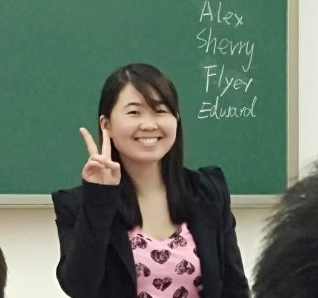
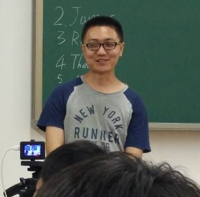
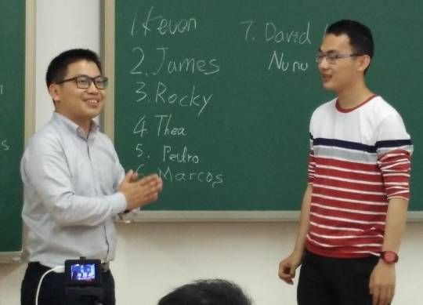

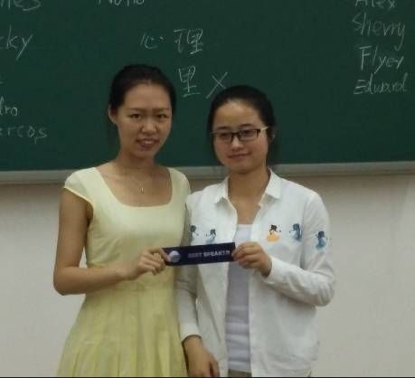
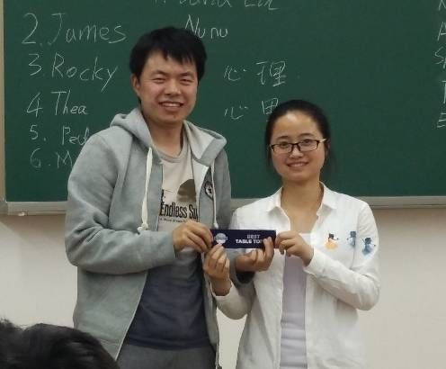
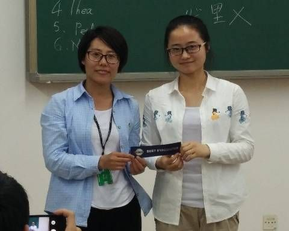
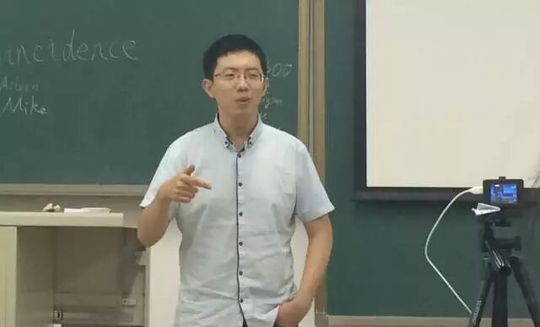
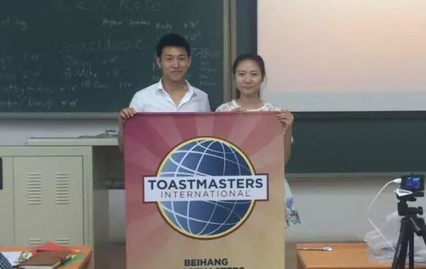
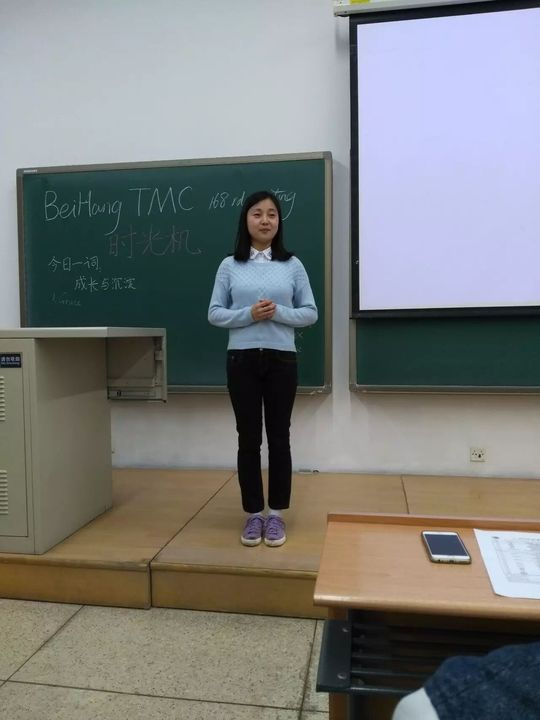


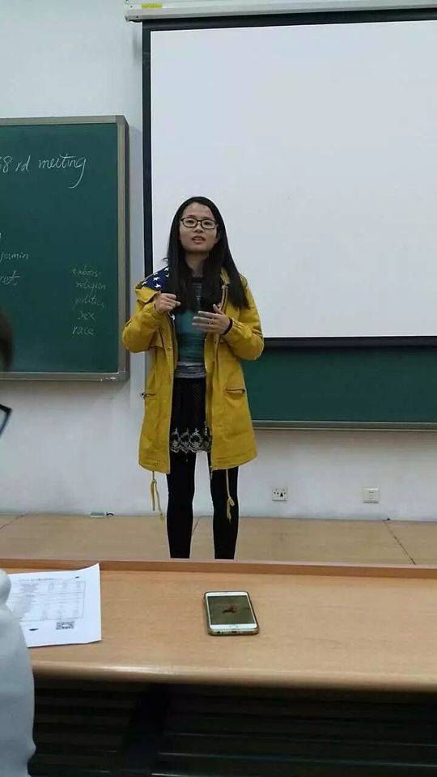
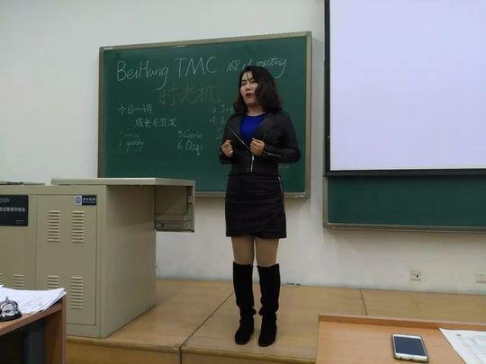
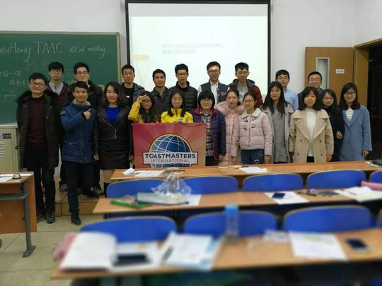
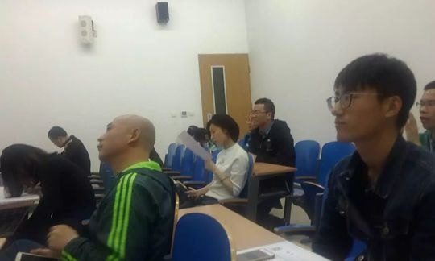
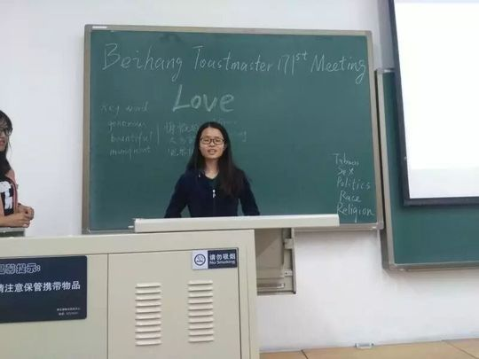
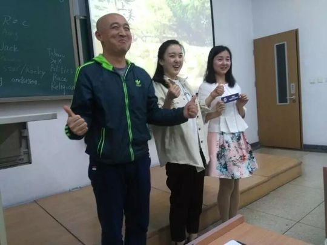
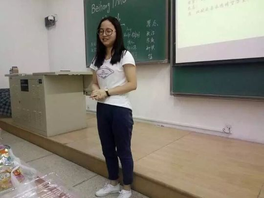
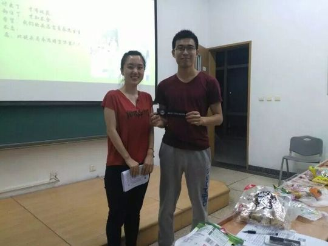
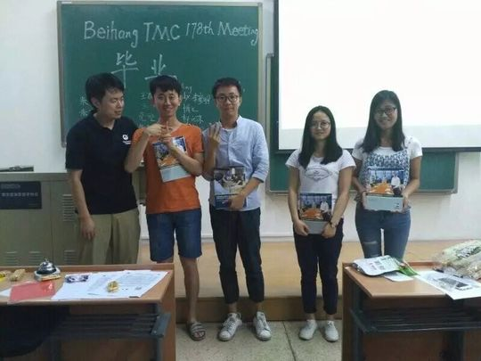